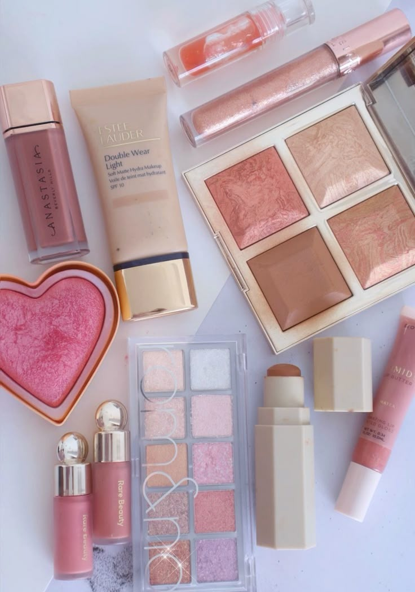

PROCUCTOS EXPORTADOS VALOR FOB COSMETICA Y PERFUMES
| RANKING TOP 10 PARTIDA ARANCELARIA | VALOR UNITARIO FOB USD |
|---|---|
| 1. Las demás mezclas de sustancias odoríferas y mezclas | 67,17 |
| 2. Preparaciones para el maquillaje de los labios | 52,91 |
| 3. Preparaciones para el maquillaje de los ojos, excepto lo medicinal | 38,19 |
| 4. Polvos, incluidos los compactos, excepto los medicinales | 11,89 |
| 5. Las demás preparaciones de belleza, de maquillaje y para el cuidado de la piel | 10,91 |
| 6. Perfumes y aguas de tocador | 10,04 |
| 7. Las demás preparaciones capilares | 9,86 |
| 8. Desodorantes corporales y antitranspirantes | 5,37 |
| 9. Oxido de zinc (blanco o flor de zinc) | 4,27 |
| 10. Cajas y cartones plegables de papel o cartón sin corrugar | 3,42 |

PRODUCTOS MAYOR EXPORTADOS
Los primeros luagres del rankig estan ocupados por productos con un alto grado de transformacion, especialmente en la industria cosmetica:
- Mezclas de sustancias odoriferas encabezan el ranking con un valor unitario FOB de 67,17 USD/kg, lo que indica que son productos altamente elaborados, posiblemente perfumes de alta gama o mezclas para industrias comesticas y de fragancias.
- Preparaciones para labios y ojos tambien muestran altos valores (52.91 y 38.19 USD/kg), lo que confirma el papel protagonico del sector de maquillaje en las exportaciones de alto valor.
SEGMENTO MEDIO
- Polvos compactos (11.89 USD/kg) y preparaciones para el cuidado de la piel (10,91 USD/kg), junto con perfumes y aguas de tocador (10,04 USD/kg),forman un bloque intermedio solido, competitivo y establece en el mercado. Estos productos tambien se destacan por su participacion em valor total exportado, lo que indica una buena demanda.

ANÁLISIS DEL COMPORTAMIENTO EXPORTADOR: Polvos compactos
1. Valor Unitario FOB
- Ago 2023 - Ene 2024: 10,6842 USD/kg
- Ago 2024 - Ene 2025: 11,8978 USD/kg
Variación positiva: Aumento de aproximadamente 11,4%
Este incremento refleja un mayor valor percibido del producto en el mercado internacional, lo cual puede deberse a mejoras en calidad, empaque, o posicionamiento de marca.
2. Valor total de exportación (USD)
- Ago 2023 - Ene 2024: 3.358.871,35 USD
- Ago 2024 - Ene 2025: 3.721.693,98 USD
- Aumento del 10,8% en ingresos por exportaciones
- Esto indica un crecimiento con potencial de expansión
3. Volumen exportado
kilos:
- 2023-2024: 314.347,74 kg
- 2024-2025: 310.454,60 kg
- Leve disminución del volumen exportado (casi un 1,2%)
Aunque el volumen bajó el valor FOB subió, lo que compensa esta caída y demuestra una mejora en el proceso por unidad.
4. Participacion en el total exportado
- 2023-2024: 2,39%
- 2024-2025: 3,24%
- Aumento en la participación del producto exportado